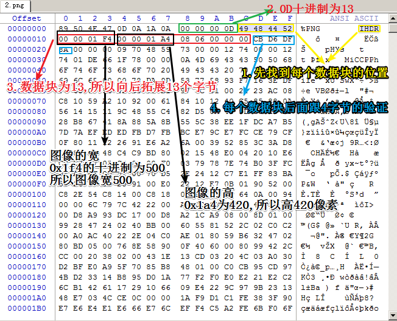
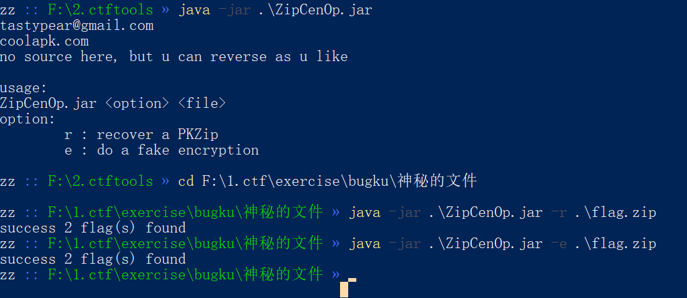

常见文件格式¶
PNG格式¶
文件头为89 50 4e 47 0d 0a 1a
png格式是由不同的数据块组成的

jpeg格式¶
属于有损压缩的与平台无关的图像格式，jpeg的压缩比高(可高达100：1),png主要是块，而jpeg主要是以段的形式
bmp格式¶
是windows的标准图像文件格式，通常情况下采用位映射存储格式，除了图像的深度(可以理解为控制色彩的能力)可选外，不采用任何其他的压缩方式，因此bmp的图像质量非常高，体积也非常大，bmp图像通常可以分为设备相关位图和设备无关位图两大类，一个bmp的文件格式通常由文件头，信息头，颜色信息和位图数据四部分组成
文件头:前面两个字节一般42 4D，随后4个字节表示位图大小,再后面4个字节为保留位设置为0,再后面的4个字节非常关键，表示文件头到位图数据的偏移量
gif格式¶
zip文件格式¶
明文攻击原理¶
- 一个加密的压缩文件
- 压缩文件的压缩工具，比如
2345好压，WinRAR，7z。zip版本号等，可以通过文件属性了解。如果是Linux平台，用zipinfo -v可以查看一个zip包的详细信息，包括加密算法等 - 知道压缩包里某个文件的部分连续内容 (至少
12字节)
如果你已经有压缩包中解压的一个文件，也就是知道了压缩吧中的部分内容，就可以尝试明文攻击
首先，将这个明文文件打包成 zip 包，比如将 readme.txt 打包成 readme.zip 。
打包完成后，需要确认二者采用的压缩算法相同。一个简单的判断方法是用
WinRAR打开文件，同一个文件压缩后的体积是否相同。如果相同，基本可以说明你用的压缩算法是正确的。如果不同，就尝试另一种压缩算法。

很有可能遇到这种情况
伪加密的破解方式¶

ZipCenOp.jar感觉用处不是很大
文件头¶
JPEG (jpg)，文件头：FFD8FFE0
PNG (png)，文件头：89504E47
GIF (gif)，文件头：474946383961
ZIP Archive (zip)，文件头：504B0304
RAR Archive (rar)，文件头：52617221
Wave (wav)，文件头：57415645
AVI (avi)，文件头：41564920
Real Audio (ram)，文件头：2E7261FD
Real Media (rm)，文件头：2E524D46
MPEG (mpg)，文件头：000001BA
MPEG (mpg)，文件头：000001B3
7z文件头：37 7A BC AF 27 1C